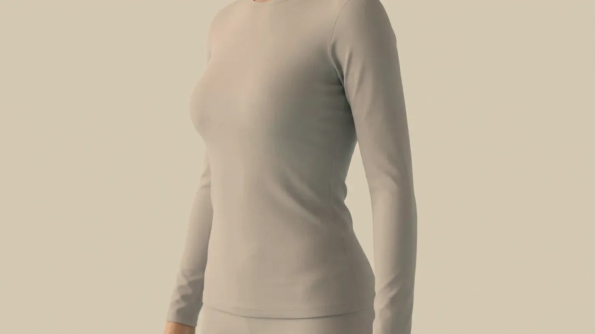

Şikâyet rehberi · Bölgesel yağlanma
Sınırlı bir birikim, sınırlı bir hedef
Bölgesel yağlanma, düzenli beslenme ve harekete rağmen küçülmeyen, kenarları belirlenebilen yağ birikimlerini anlatır; bir kilo verme yöntemi ya da genel bir zayıflama başlığı değildir. Muayenehanemizde gıdı, karın, bel yanları ve bacak iç yüzü gibi bölgeler değerlendirilir. Karar vermeden önce yağ dokusu, ödem ve deri gevşekliği birbirinden ayrılır.

Temsilî görsel · yapay zekâ ile üretildiAyrım
Aynada gördüğünüz dolgunluğun kaynağı ne?
Dolgun görünen her bölgede yağ dokusu bulunmayabilir. Sıvı birikimi, kas kütlesi, deri gevşekliği ve duruş bozukluğu benzer bir görüntü oluşturabilir. Bu dört olasılık birbirinden ayrılmadan işlem konuşulmaz; çünkü yanlış dokuyu hedefleyen bir uygulama sonuç vermediği gibi mevcut görünümü daha da belirginleştirebilir. Ayrım elle muayene, gün içindeki değişimin sorulması ve derinin esnekliğine bakılarak yapılır.
Yağ dokusu
Bölge parmaklar arasında tutulduğunda yumuşak, kayabilen ve kenarları hissedilebilen bir doku vardır. Sabahtan akşama pek değişmez; değişimi aylar ve yıllar içinde, yavaşça olur.
Yağın vücudun neresinde toplanacağını büyük ölçüde kalıtım ve hormonlar belirler; bu yüzden zayıf kişilerde de inatçı bir bölge görülebilir. Derinin hemen altındaki yağ, karın boşluğunda organları saran iç yağdan farklı bir dokudur. Deri yüzeyinden yapılan uygulamaların hiçbiri o derin yağa ulaşmaz.
Ödem
Sıvı birikiminde görünüm gün içinde dalgalanır: akşam sabaha göre daha dolgundur, tuzlu bir yemekten ya da uzun süre ayakta kalmaktan sonra artar, parmakla bastırınca kısa süreli bir iz kalabilir. Burada ilk iş bir işlem değil, nedeni bulmaktır; tiroit, böbrek ve kalp işlevleriyle kullandığınız ilaçlar gözden geçirilir.
Deri gevşekliği
Bölge tutulduğunda kalın bir yağ katmanı yerine ince ve esnekliğini yitirmiş bir deri hissedilir. Bu durum özellikle belirgin kilo kaybından ya da gebelikten sonra ve yaş ilerledikçe ortaya çıkar. Yağ dokusuna yönelik bir uygulama böyle bir görünümü düzeltmez, hatta gevşekliği daha fark edilir kılabilir. Konu hacim kaybı ve sarkma başlığına ya da cerrahi bir değerlendirmeye kayar.
Kas kütlesi ve duruş
Karın ve bel çevresindeki dolgunluğun bir bölümü karın duvarının gevşekliği, kas yapısı ve duruşla ilgilidir: öne eğik bir duruşta karın öne itilir ve bel yanlarında katlanma izlenimi oluşur. Doğumdan sonra karın kaslarının orta hatta ayrılması da benzer bir görüntü verebilir. Bu durumların karşılığı yağa yönelik bir uygulama değil, egzersiz ve gerekirse ilgili uzmanlık değerlendirmesidir.
Bölgesel yağlanma başlığı altında muayenehanemizde en çok gıdı (çene altı), karın, bel yanları ve bacak iç yüzü değerlendirilir. Ortak nokta, elle kavranabilen, kenarları belli ve deri altında yüzeysel duran bir birikimin bulunmasıdır. Deri yüzeyindeki portakal kabuğu görünümü ise yağ birikiminden ayrı bir konudur ve selülit görünümü sayfasında anlatılır.
Yaygın kilo fazlalığı, karın içindeki derin yağ ve belirgin deri fazlalığı bu başlığın dışında kalır. Böyle bir tabloda bunu ilk görüşmede söyler, beslenme, endokrinoloji ya da plastik cerrahi gibi ilgili bir uzmanlık alanına başvurmanızı öneririz (neden bazı işlemleri yapmıyoruz). Bölgesel yağ dokusunu hedeflemek vücut ağırlığını azaltan bir yöntem değildir; kilo yönetimi ayrı bir tıbbi konudur.
En uygun aday; son altı ayda kilosu sabit kalmış, rahatsız olduğu yeri tek bir bölge olarak gösterebilen, o bölgede parmaklarla tutulabilen bir doku bulunan ve derisi hâlâ esnek olan kişidir.
Sıvı birikiminin baskın olduğu, deri gevşekliğinin öne çıktığı, hızlı kilo değişiminin sürdüğü, gebelik ya da emzirme dönemindeki kişilerde ve beklentinin bölgesel bir değişiklikle karşılanamayacağı durumlarda uygulama yapılmaz. Bu karar size açıkça söylenir; sık verilen ve geçerli bir sonuçtur.
Sonrası
Ayrım netleşince hangi seçenekler konuşulur?
Gerçekçi beklenti, sınırlı bir bölgede görünümün değişmesidir. Değişim kademeli gelişir, çoğunlukla haftalar ile aylar arasında belirginleşir ve kişiden kişiye farklıdır. Belirli bir santim kaybı ya da belirli sayıda seansta belirli bir sonuç vaat edilmez; size özel plan muayeneden sonra hekim tarafından kurulur.
Bölgesel lipoliz
YAĞ DOKUSUGünler içinde→Selülit görünümü
YÜZEYMuayenede belirlenir→Hekim muayenesi
ÖDEMAynı gün→
Bölgesel lipoliz
Gıdı, karın, bel yanları ve bacak iç yüzündeki kenarları belli, yüzeysel birikimlerde uygun bulunan kişilerde değerlendirilir.
Sayfasına git →Sık gelen sorular
Merak ettiğiniz soruya dokunun, yanıtı burada açılsın
Bir adım ötesi
Hangi bölgenin, ne ölçüde değişebileceğini konuşalım
Uygun olmayan durumlar ilk görüşmede açıkça söylenir; gerekiyorsa hangi uzmanlık alanına başvurmanız gerektiği belirtilir.
Metni hazırlayan ve tıbbi açıdan gözden geçiren: Uzm. Dr. Rahmi Cebeci (Aile Hekimliği Uzmanı · Medikal Estetik Sertifikalı).
Buradaki anlatım herkese yöneliktir; size özel bir teşhis ya da tedavi planı sunmaz, muayenenin yerini tutmaz. Her uygulamanın etkisi kişiye göre farklı olur.